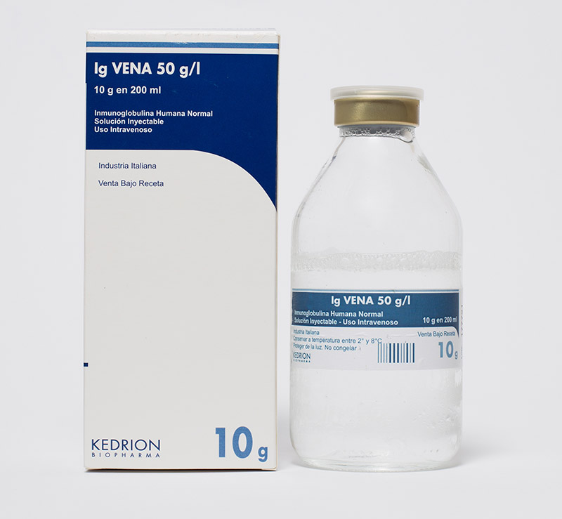

IG Vena®
Principio activo: Inmunoglobulina Humana Normal 50 g/l (al 5%)
Presentación: Sol.Inyectable I.V. 2,5; 5 y 10 g.
Indicaciones:
Terapia sustitutiva.
Síndromes de inmunodeficiencia primaria:
- Agamaglobulinemia e hipogamaglobulinemia congénita.
- Inmunodefieciencia común variable.
- Inmunodeficiencia combinada grave.
- Síndrome de Wiskott Aldrich.
- Mieloma o leucemia linfocítica crónica con grave hipogamaglobulinemia secundaria e infecciones recurrentes.
- Niños con SIDA congénito e infecciones recurrentes.
Efectos inmunomodulador.
Púrpura trombocitopénica idiopática (ITP), en niños con alto riesgo de hemorragias o antes de intervenciones quirúrgicas para corregir el recuento de plaquetas.
- Síndrome de Guílláin Barré.
- Neuropatía motora multifocal.
- Enfermedad de Kawasaki.
- Miastenia gravis.
Trasplante del médula ósea alogénica .
Almacenamiento: entre 2° y 8°C
GLN: 7798087803524, 7798087803500 y 7798087803517